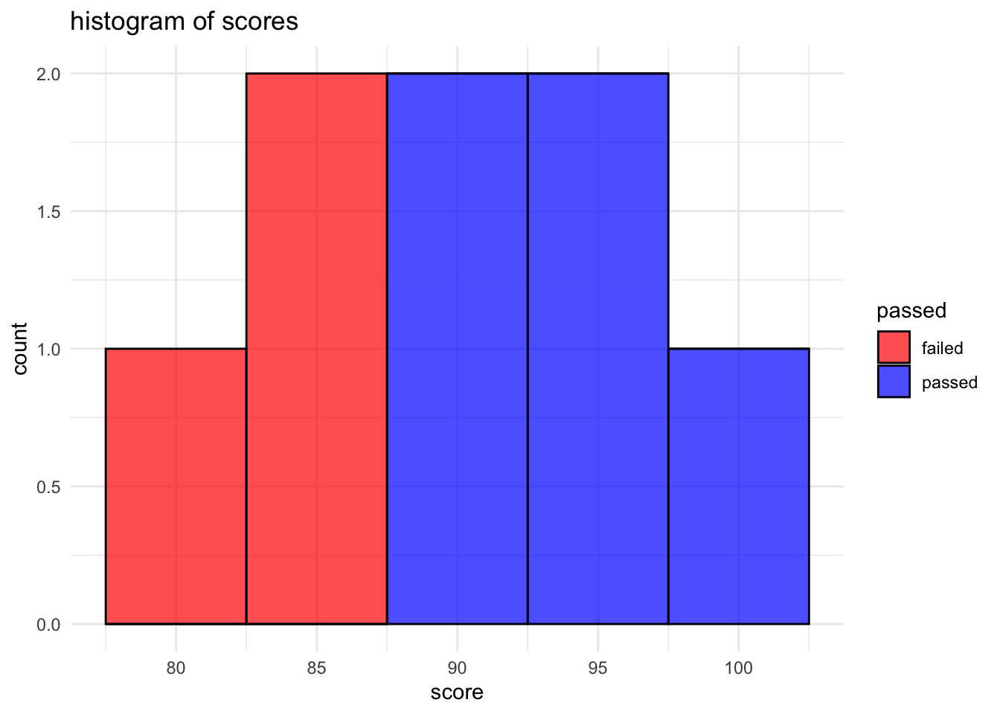
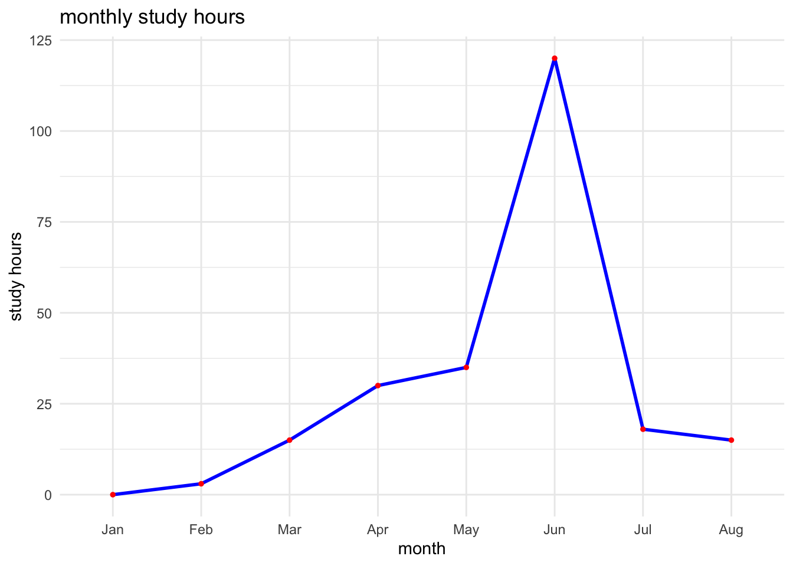
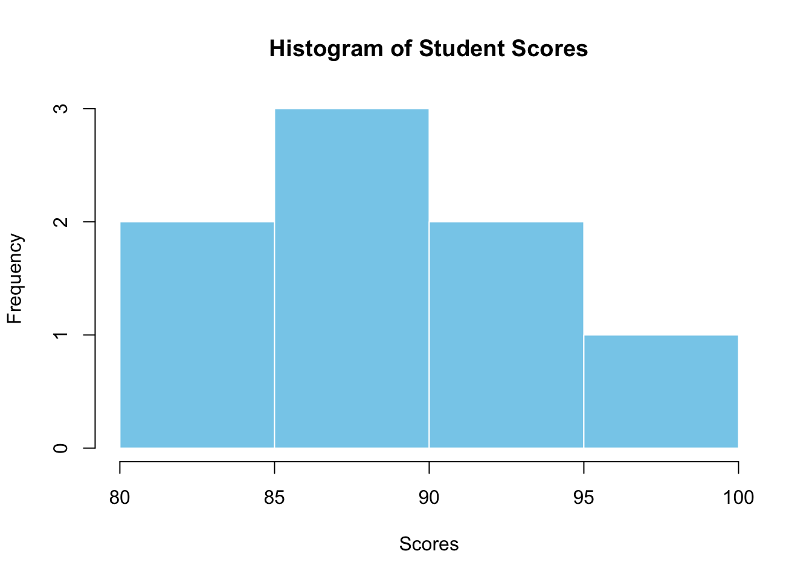

![]()

Background readings: none today!
- If you want to get started, download R and Rstudio as below
- List of recommended readings at the end of this lecture.
Key concepts for the test(s):
Today we introduce the following topics relevant to the Test(s)
- Confounding (introduced in week 2)
- Internal Validity (introduced in week 2)
- External Validity (introduced in week 3)
Today we discuss these concepts informally. We will define these concepts formally in technical detail in week 2.
Lecture: Introduction to the Course
Slides
Open in browser here
Lab 1: Install R and RStudio
This session introduces R and R-Studio.
Why learn R?
- You’ll need it for your final report.
- Supports your psychology coursework.
- Enhances your coding skills. Presently all buzz is about AI. Amateur coders can greatly accelerate their abilities – but you still need to have some coding. If you have no coding skills, you will lose out to those that do.
- Coding can become as enjoyable as music or languages over time, really!
Installing R
- Visit the Comprehensive R Archive Network (CRAN) at https://cran.r-project.org/.
- Select the version of R suitable for your operating system (Windows, Mac, or Linux).
- Download and install it by following the on-screen instructions.
Installing RStudio
After downloading R…
Step 1: Install R-Studio
If you have already downloaded and installed R from the Comprehensive R Archive Network (CRAN):
- go to the RStudio download page at https://www.rstudio.com/products/rstudio/download/
- choose the free version of RStudio Desktop, and download it for your operating system.
- download and install RStudio Desktop.
- open RStudio to begin setting up your project environment.
Step 2: Create a new project
- In RStudio, go to
File > New Project. - Choose
New Directoryfor a new project orExisting Directoryif you have a folder where you want to initialise an RStudio project. - For a new project, select
New Project, then provide a directory name. This name will also be the name of your project. - Specify the location where the project folder will be created.
- Click
Create Project.
Order your R-studio/R workflow
- Clear folder structure
- If you are using GitHub (or similar) create a location on your machine (i.d. not dropbox)
- If you are not using GitHub choose the cloud (Dropbox or similar).
- When creating new files and scripts, use clear labels that anyone could understand.
- That “anyone” will be your future self, trying to make sense.
Step 3: Give project structure
- Organising Files and Folders:
- Within your project, create folders to organise your scripts and data.
- Common folder names include
R/for R scripts,data/for datasets, anddoc/for documentation. - You can create these folders using RStudio’s
Filespane or through your operating system’s file explorer.
- Creating and Managing R Scripts:
- To create a new R script, go to
File > New File > R Script. - Save the script in your project directory’s
R/folder to keep your work organised. Use meaningful file names that describe the script’s purpose.
- To create a new R script, go to
- Version Control:
- If you are familiar with version control, you can initialise a Git repository within your project by selecting the
Version Controloption when creating a new project. - This allows for better tracking of changes and collaboration if working with others.
- If you are not familiar with version control (or have not installed
giton your machine), do not worry about initialising a Git repository.
- If you are familiar with version control, you can initialise a Git repository within your project by selecting the
Step 4: Working with R-scripts
- Writing and executing Code:
- Write your R code in the script editor.
- Execute code by selecting lines and pressing
Ctrl + Enter(Windows/Linux) orCmd + Enter(Mac).
- Commenting and documentation:
- Use comments (preceded by
#) to document your code for clarity and future reference.
- Use comments (preceded by
- Saving and organising scripts:
- Regularly save your scripts (
Ctrl + SorCmd + S). - Organise scripts into folders within your project for different analyses or data processing tasks.
- Regularly save your scripts (
Step 5: When you exit R-studio
- Before concluding your work, save your workspace or clear it to start fresh in the next session (
Session > Restart R).
Order your R-studio/R workflow
- Again, use clearly defined script names
- Annotate your code
- Save your scripts often (
Ctrl + SorCmd + S).
Exercise 1: Install the
tidyverse package
Follow these instructions to install the tidyverse package in RStudio:
Open RStudio: launch RStudio on your computer.
Access package installation:
- Navigate to the menu at the top of RStudio and click on
Tools > Install Packages.... This opens the Install Packages dialogue box.
- Navigate to the menu at the top of RStudio and click on
Install
tidyverse:- In the Install Packages dialogue box, you will see a field labelled “Packages (separate multiple with space or comma):”. Click in this field and type
tidyverse. - Below the packages field, ensure the checkbox for
Install dependenciesis checked. This ensures all packages thattidyversedepends on are also installed.
- In the Install Packages dialogue box, you will see a field labelled “Packages (separate multiple with space or comma):”. Click in this field and type
Begin installation:
- Click on the
Installbutton to start the installation process.
- Click on the
The installation might take a few minutes. Monitor the progress in the “Console” pane. Once the installation is complete, you will see a message in the console indicating that the process has finished.
- Load
tidyverse: After successful installation, you can load thetidyversepackage into your R session by typinglibrary(tidyverse)in the console and pressingEnter.
Basic R Commands
How to copy the code on this page
R Script > New File > R- Name your new R script and save it in a folder.
- Hover your cursor over the top right of the code panel, and click the copy tab.
- Copy the text into your script.
- Save:
Ctrl + SorCmd + S.
Assignment (<-)
Assignment in R is done using the ‘<-’ operator, which on my machine renders <-. This operator assigns values to variables:
x <- 10 # assigns the value 10 to x
y <- 5 # assigns the value 5 to y
# this does the same
x = 10
y = 5
# note what happens when we do this
# 10 = 5 # not run
# but we can do this
# 10 == 5 # considered below
RStudio Assignment Operator Shortcut
- For macOS:
Option+-(minus key) inserts<-. - For Windows and Linux:
Alt+-(minus key) inserts<-.
Consult the latest RStudio documentation or access the Keyboard Shortcuts Help (Tools -> Keyboard Shortcuts Help) for up-to-date shortcuts.
Concatenation (c())
The c() function combines multiple elements into a vector.
numbers <- c(1, 2, 3, 4, 5) # a vector of numbers
print(numbers)[1] 1 2 3 4 5Operations (+, -)
Basic arithmetic operations include addition (+) and subtraction (-).
# this does the same
x <- 10
y <- 5
sum <- x + y # adds x and y
print(sum)[1] 15difference <- x - y # subtracts y from x
# note we did not need to use the `print()` function
difference[1] 5
Executing code
Ctrl + Enter(Windows/Linux) orCmd + Enter(Mac).
In addition to assignment, multiplication and division are fundamental arithmetic operations in R that allow you to manipulate numeric data. Here is how you can incorporate these operations into your basic R commands documentation:
Multiplication (*) and Division (/)
Multiplication and division in R are performed using the * and / operators, respectively. These operators allow for element-wise operations on vectors, as well as operations on individual numeric values.
# multiplication
product <- x * y # multiplies x by y
product[1] 50# division
quotient <- x / y # divides x by y
quotient[1] 2# element-wise multiplication on vectors
vector1 <- c(1, 2, 3)
vector2 <- c(4, 5, 6)
# multiplies each element of vector1 by the corresponding element of vector2
vector_product <- vector1 * vector2
vector_product[1] 4 10 18# element-wise division on vectors
# divides each element of vector1 by the corresponding element of vector2
vector_division <- vector1 / vector2
vector_division[1] 0.25 0.40 0.50- Multiplication and division can be used for scalar (single values) and vector (multiple values) operations. When applied to vectors, these operations are performed element-wise.
- Be mindful of division by zero, as this will result in
Inf(infinity) orNaN(not a number) depending on the context.
# example of division by zero
result <- 10 / 0 # results in Inf
zero_division <- 0 / 0 # results in NaN- R also supports integer division using the
%/%operator and modulo operation using%%to find the remainder.
# integer division
integer_division <- 10 %/% 3 # results in 3
# modulo operation
remainder <- 10 %% 3 # results in 1Logic (!, !=, ==)
Logical operations include NOT (!), NOT EQUAL (!=), and EQUAL (==).
x_not_y <- x != y # checks if x is not equal to y
x_not_y[1] TRUEx_equal_10 <- x == 10 # checks if x is equal to 10
x_equal_10[1] TRUELogical operations are fundamental in R for controlling the flow of execution and making decisions based on conditions. In addition to NOT (!), NOT EQUAL (!=), and EQUAL (==), there are several other logical operators you should know:
OR (| and ||)
- The
|operator performs element-wise logical OR operation. It evaluates each pair of elements in two logical vectors to see if at least one isTRUE. - The
||operator performs a logical OR operation but only evaluates the first element of each vector. It’s mainly used in if statements and not for vectorised operations.
# element-wise OR
vector_or <- c(TRUE, FALSE) | c(FALSE, TRUE) # returns c(TRUE, TRUE)
vector_or[1] TRUE TRUE# single OR (only looks at first element)
single_or <- TRUE || FALSE # returns TRUE
single_or[1] TRUEAND (& and &&)
- The
&operator performs element-wise logical AND operations. It checks if both elements in the corresponding positions of two logical vectors areTRUE. - The
&&operator performs a logical AND operation but only evaluates the first element of each vector. Like||, it’s used in conditions that do not require vectorised operations.
# element-wise AND
vector_and <- c(TRUE, FALSE) & c(FALSE, TRUE) # returns c(FALSE, FALSE)
# single AND (only looks at first element)
single_and <- TRUE && FALSE # returns FALSE
RStudio Workflow Shortcuts
Shortcuts bring order and boost creativity
- Execute Code Line:
Cmd+Return(Mac) orCtrl+Enter(Windows/Linux) - Insert Section Heading:
Cmd+Shift+R(Mac) orCtrl+Shift+R(Windows/Linux) - Align Code:
Cmd+Shift+A(Mac) orCtrl+Shift+A(Windows/Linux) - Comment/Uncomment:
Cmd/Ctrl+Shift+C - Save All:
Cmd/Ctrl+Shift+S - Find/Replace:
Cmd/Ctrl+F,Cmd/Ctrl+Shift+F - New File:
Cmd/Ctrl+Shift+N - Auto-complete:
Tab
For more commands, explore the Command Palette available under Tools -> Command Palette or Shift + Cmd + P (Mac) or Shift + Ctrl + P (Windows/Linux).
Data Types in R
Understanding data types in R is essential. R supports several fundamental data types, including integers, characters, factors, and ordered factors. Each type has its specific use case and functions associated with it.
Integers
Integers are whole numbers without decimal points. In R, integers can be explicitly defined by adding an L suffix to the number.
# define an integer
x <- 42L
x[1] 42# check
str(x) # is integer int 42# convert to numeric
y <- as.numeric(x)
str(y) num 42Integers are particularly useful when dealing with counts or indices that do not require fractional values.
Characters
Character data types are used to represent text. In R, text strings are enclosed in quotes, either single (') or double (").
# define a character string
name <- "Alice"Characters are essential for categorical data that does not fit into numerical categories, such as names, labels, and descriptions.
Factors
Factors are used to represent categorical data that can take on a limited number of values, known as levels. Factors are useful for statistical modeling as they explicitly define categories in the data.
# Define a factor
colors <- factor(c("red", "blue", "green"))Factors can improve efficiency and memory usage when dealing with categorical data, especially in large datasets. And they are useful when dealing with categorical variables (naturally).
Ordered Factors
Ordered factors are a special type of factor where the levels have an inherent order. They are defined similarly to factors but with an additional argument to denote the order.
# create an ordered factor using the `ordered` function
education_levels <- c("High School", "Bachelor", "Master", "Ph.D.")
education_factor <- factor(education_levels, ordered = TRUE)
education_factor[1] High School Bachelor Master Ph.D.
Levels: Bachelor < High School < Master < Ph.D.# specify levels explicitly
education_ordered_explicit <- factor(c("High School", "Bachelor", "Master", "Ph.D."), levels = c("High School", "Bachelor", "Master", "Ph.D."), ordered = TRUE)
education_ordered_explicit[1] High School Bachelor Master Ph.D.
Levels: High School < Bachelor < Master < Ph.D.Ordered factors allow for logical comparisons based on their order, which is particularly useful in analyses where the order of categories matters, such as ordinal regression.
Operations with Ordered Factors
Ordered factors support logical comparisons that consider the order of the levels.
# comparison of ordered factors
edu1 <- ordered("Bachelor", levels = c("High School", "Bachelor", "Master", "Ph.D."))
edu2 <- ordered("Master", levels = c("High School", "Bachelor", "Master", "Ph.D."))
edu2 > edu1 # returns TRUE[1] TRUEChecking Data with Ordered Factors
You can view the structure and summary of ordered factors just as with regular factors, but the output will indicate the order.
# view the structure
str(education_ordered_explicit) Ord.factor w/ 4 levels "High School"<..: 1 2 3 4# summary to see the distribution
summary(education_ordered_explicit)High School Bachelor Master Ph.D.
1 1 1 1 Modifying Ordered Factors
If you need to change the order of levels or add new levels, you can re-factor the variable using factor() or ordered() and specify the new levels.
# add new level and reorder
#old factor
education_levels[1] "High School" "Bachelor" "Master" "Ph.D." # new levels, add new factor
new_levels <- c("Primary School", "High School", "Bachelor", "Master", "Ph.D.")
#order explicitly
education_updated <- factor(education_levels, levels = new_levels, ordered = TRUE)
# check
str(education_updated) Ord.factor w/ 5 levels "Primary School"<..: 2 3 4 5Strings
Strings are sequences of characters.
name <- "world" # assigns a string to name
greeting <- paste("Hello,", name) # concatenates strings
#show
greeting[1] "Hello, world"Vectors
Vectors are one of R’s most fundamental data structures, essential for storing and manipulating a sequence of data elements.
Vectors are homogenous, meaning all elements in a vector must be of the same type (e.g., all numeric, all character, etc.).
Vectors in R can be created using the c() function, which stands for concatenate or combine:
# numeric vector
numeric_vector <- c(1, 2, 3, 4, 5)
# character vector
character_vector <- c("apple", "banana", "cherry")
# logical vector
logical_vector <- c(TRUE, FALSE, TRUE, FALSE)Manipulating Vectors
R allows you to perform operations on vectors in a very intuitive way. Operations are vectorised, meaning they are applied element-wise:
# arithmetic operations
vector_sum <- numeric_vector + 10 # Adds 10 to each element
#show
vector_sum[1] 11 12 13 14 15# vector mutliplication
vector_multiplication <- numeric_vector * 2 # Multiplies each element by 2
#show
vector_multiplication[1] 2 4 6 8 10# logical operations
vector_greater_than_three <- numeric_vector > 3 # Returns a logical vector
#show
vector_greater_than_three[1] FALSE FALSE FALSE TRUE TRUEYou can access elements of a vector by using square brackets [ ] with an index or a vector of indices:
# the first element of numeric_vector
first_element <- numeric_vector[1]
#show
first_element[1] 1# multiple elements
some_elements <- numeric_vector[c(2, 4)] # Gets the 2nd and 4th elements
#show
first_element[1] 1Functions with vectors
R provides a rich set of functions for statistical computations and manipulations that work with vectors:
# statistical summary
vector_mean <- mean(numeric_vector)
vector_mean[1] 3vector_sum <- sum(numeric_vector)
vector_sum[1] 15# sorting
sorted_vector <- sort(numeric_vector)
sorted_vector[1] 1 2 3 4 5# unique values
unique_vector <- unique(character_vector)
unique_vector[1] "apple" "banana" "cherry"Data Frames
Create Data Frames
Data frames can be created using the data.frame() function, specifying each column and its values. Here’s a simple example:
df <- data.frame(
Name = c("Alice", "Bob", "Charlie"),
Age = c(25, 30, 35),
Gender = c("Female", "Male", "Male")
)
# check structure
head(df) Name Age Gender
1 Alice 25 Female
2 Bob 30 Male
3 Charlie 35 Malestr(df)'data.frame': 3 obs. of 3 variables:
$ Name : chr "Alice" "Bob" "Charlie"
$ Age : num 25 30 35
$ Gender: chr "Female" "Male" "Male"summary(df) Name Age Gender
Length:3 Min. :25.0 Length:3
Class :character 1st Qu.:27.5 Class :character
Mode :character Median :30.0 Mode :character
Mean :30.0
3rd Qu.:32.5
Max. :35.0 In this example, df is a data frame with three columns (Name, Age, Gender) and three rows, each representing a different individual.
Access Data Frame Elements
There are often several ways to do the same thing in R. You can access the elements of a data frame in several ways:
- By column name: use the
$operator followed by the column name.
names <- df$Name # extracts the `Name` column- By row and column: Use the
[row, column]indexing. Rows or columns can be specified by number or name.
second_person <- df[2, ] # extracts the second row
age_column <- df[, "Age"] # extracts the `Age` column
# show
second_person Name Age Gender
2 Bob 30 Maleage_column[1] 25 30 35- Using
subset()Function: To extract subsets of the data frame based on conditions.
adults <- subset(df, Age > 18) # extracts rows where `Age` is greater than 18
summary(adults$Age) Min. 1st Qu. Median Mean 3rd Qu. Max.
25.0 27.5 30.0 30.0 32.5 35.0 mean(adults$Age)[1] 30min(adults$Age)[1] 25Manipulating Data Frames
Data frames can be manipulated in various ways:
- Adding Columns: You can add new columns using the
$operator.
df$Employed <- c(TRUE, TRUE, FALSE) # adds a new column "Employed"
# show
head(df) Name Age Gender Employed
1 Alice 25 Female TRUE
2 Bob 30 Male TRUE
3 Charlie 35 Male FALSE- Adding rows: Use the
rbind()function to add new rows.
new_person <- data.frame(Name = "Diana", Age = 28, Gender = "Female", Employed = TRUE)
df <- rbind(df, new_person)
# show
head(df) Name Age Gender Employed
1 Alice 25 Female TRUE
2 Bob 30 Male TRUE
3 Charlie 35 Male FALSE
4 Diana 28 Female TRUE- Modifying values: Access the element or column and assign it a new value.
# note double brackets
df[4, "Age"] <- 26 # changes Alice's age to 26
# view row
df[4, ] Name Age Gender Employed
4 Diana 26 Female TRUE- Removing columns or rows: set columns to
NULLto remove them, or use-with row or column indices.
head(df) Name Age Gender Employed
1 Alice 25 Female TRUE
2 Bob 30 Male TRUE
3 Charlie 35 Male FALSE
4 Diana 26 Female TRUE# remove employed column
df$Employed <- NULL # removes the Employed column
head(df) Name Age Gender
1 Alice 25 Female
2 Bob 30 Male
3 Charlie 35 Male
4 Diana 26 Female# remove fourth row (Diana)
df <- df[-4, ] # removes the fourth row
#show
df Name Age Gender
1 Alice 25 Female
2 Bob 30 Male
3 Charlie 35 MaleAdd Rows with rbind()
The rbind() function in R stands for “row bind”. It is used to combine data frames or matrices by rows. This function is particularly useful when you want to add new observations or records to an existing data frame.
# adding a new row
new_person <- data.frame(Name = "Eve", Age = 32, Gender = "Female")
df <- rbind(df, new_person)
# verify the row addition
head(df) Name Age Gender
1 Alice 25 Female
2 Bob 30 Male
3 Charlie 35 Male
4 Eve 32 FemaleWhen using rbind(), ensure that the columns in the data frames being combined match in both name and order. If they do not match, you may encounter errors or unexpected results.
Adding Columns with cbind()
Conversely, the cbind() function in R stands for “column bind”. It is used to combine data frames or matrices by columns. This function allows you to add new variables to an existing data frame.
# example of adding a new column
df$Occupation <- c("Engineer", "Doctor", "Artist", "Teacher") # direct assignment
# or using cbind for a separate vector
Occupation_vector <- c("Engineer", "Doctor", "Artist", "Teacher")
df <- cbind(df, Occupation_vector)
# verify the column addition
head(df) Name Age Gender Occupation Occupation_vector
1 Alice 25 Female Engineer Engineer
2 Bob 30 Male Doctor Doctor
3 Charlie 35 Male Artist Artist
4 Eve 32 Female Teacher TeacherAs with rbind(), when using cbind(), it is crucial that the data frames or vectors being combined have compatible dimensions. For cbind(), the number of rows must match.
Considerations for rbind() and cbind()
While rbind() and cbind() are straightforward and powerful functions for combining data, they have some limitations:
- Matching Column or Row Names: for
rbind(), the column names between the data frames need to match exactly. Forcbind(), the row numbers must be equal. - Factor Levels: when binding factors with different levels, R will unify the levels, which can sometimes lead to unexpected results. Be mindful of factor levels when using these functions.
- Performance: we will use a different approach next week (and following), draing on the
dplyrpackage, which will connect more easily to our workflows.
By understanding and utilizing rbind() and cbind(), you can efficiently manipulate the structure of your data frames, adding flexibility to your data analysis workflows in R.
View Data Structure (summary(), str(), head(), tail())
summary(): Provides a summary of an object’s structure.str(): Displays the structure of an object.head(): Shows the first few rows of a data frame or the first elements of a vector.tail(): Shows the last few rows of a data frame or the last elements of a vector.
# iris is a preloaded dataset
str(iris) # displays structure of scores_df'data.frame': 150 obs. of 5 variables:
$ Sepal.Length: num 5.1 4.9 4.7 4.6 5 5.4 4.6 5 4.4 4.9 ...
$ Sepal.Width : num 3.5 3 3.2 3.1 3.6 3.9 3.4 3.4 2.9 3.1 ...
$ Petal.Length: num 1.4 1.4 1.3 1.5 1.4 1.7 1.4 1.5 1.4 1.5 ...
$ Petal.Width : num 0.2 0.2 0.2 0.2 0.2 0.4 0.3 0.2 0.2 0.1 ...
$ Species : Factor w/ 3 levels "setosa","versicolor",..: 1 1 1 1 1 1 1 1 1 1 ...summary(iris) # summary statistics Sepal.Length Sepal.Width Petal.Length Petal.Width
Min. :4.300 Min. :2.000 Min. :1.000 Min. :0.100
1st Qu.:5.100 1st Qu.:2.800 1st Qu.:1.600 1st Qu.:0.300
Median :5.800 Median :3.000 Median :4.350 Median :1.300
Mean :5.843 Mean :3.057 Mean :3.758 Mean :1.199
3rd Qu.:6.400 3rd Qu.:3.300 3rd Qu.:5.100 3rd Qu.:1.800
Max. :7.900 Max. :4.400 Max. :6.900 Max. :2.500
Species
setosa :50
versicolor:50
virginica :50
head(iris) # first few rows Sepal.Length Sepal.Width Petal.Length Petal.Width Species
1 5.1 3.5 1.4 0.2 setosa
2 4.9 3.0 1.4 0.2 setosa
3 4.7 3.2 1.3 0.2 setosa
4 4.6 3.1 1.5 0.2 setosa
5 5.0 3.6 1.4 0.2 setosa
6 5.4 3.9 1.7 0.4 setosatail(iris) # last few rows Sepal.Length Sepal.Width Petal.Length Petal.Width Species
145 6.7 3.3 5.7 2.5 virginica
146 6.7 3.0 5.2 2.3 virginica
147 6.3 2.5 5.0 1.9 virginica
148 6.5 3.0 5.2 2.0 virginica
149 6.2 3.4 5.4 2.3 virginica
150 5.9 3.0 5.1 1.8 virginicamean()
- Calculates the arithmetic mean of a numerical object.
set.seed(12345)
# we will cover R’s powerful simulation functions like `rnorm()`next week
vector <- rnorm(n = 40, mean = 0, sd = 1)
mean(vector) # note the sampling error here[1] 0.2401853sd()
- Computes the standard deviation, which measures the amount of variation or dispersion of a set of values.
sd(vector) # replace 'vector' with your numerical vector[1] 1.038425min() and max()
- These functions return a numerical object’s minimum and maximum values, respectively.
min(vector) # minimum value[1] -1.817956max(vector) # maximum value[1] 2.196834table()
- Generates a frequency table of an object, useful for categorical data. It counts the number of occurrences of each unique element.
# seed for reproducibility
set.seed(12345)
# two categorical variables
Gender <- sample(c("Male", "Female"),
size = 100,
replace = TRUE,
prob = c(0.5, 0.5))
Education_Level <- sample(c("High School", "Bachelor", "Master"),
size = 100,
replace = TRUE,
prob = c(0.4, 0.4, 0.2))
# create a data frame
df_table_example <- data.frame(Gender, Education_Level)
# show
head(df_table_example) Gender Education_Level
1 Male Bachelor
2 Male High School
3 Male Master
4 Male High School
5 Female High School
6 Female MasterCross-Tabulation with table()
table()can also be used for cross-tabulation, providing a way to analyse the relationship between two or more factors.
table(df_table_example$Gender, df_table_example$Education_Level) # crosstab
Bachelor High School Master
Female 14 19 15
Male 21 18 13This produces a contingency table showing the counts at each combination of factor1 and factor2 levels.
Explore Your Data Frames
Functions such as head(), tail(), and str() help you explore the first few rows, last few rows, and the structure of the data frame, respectively.
# show
head(df) # First six rows Name Age Gender Occupation Occupation_vector
1 Alice 25 Female Engineer Engineer
2 Bob 30 Male Doctor Doctor
3 Charlie 35 Male Artist Artist
4 Eve 32 Female Teacher Teachertail(df) # Last six rows Name Age Gender Occupation Occupation_vector
1 Alice 25 Female Engineer Engineer
2 Bob 30 Male Doctor Doctor
3 Charlie 35 Male Artist Artist
4 Eve 32 Female Teacher Teacherstr(df) # Structure of the data frame'data.frame': 4 obs. of 5 variables:
$ Name : chr "Alice" "Bob" "Charlie" "Eve"
$ Age : num 25 30 35 32
$ Gender : chr "Female" "Male" "Male" "Female"
$ Occupation : chr "Engineer" "Doctor" "Artist" "Teacher"
$ Occupation_vector: chr "Engineer" "Doctor" "Artist" "Teacher"Summary Statistics
Use summary() to get a summary of each column.
# show
summary(df) Name Age Gender Occupation
Length:4 Min. :25.00 Length:4 Length:4
Class :character 1st Qu.:28.75 Class :character Class :character
Mode :character Median :31.00 Mode :character Mode :character
Mean :30.50
3rd Qu.:32.75
Max. :35.00
Occupation_vector
Length:4
Class :character
Mode :character
First Data Visualisation with ggplot2
ggplot2 is a powerful and flexible R package for creating elegant data visualisations. It is based on the Grammar of Graphics, allowing users to build plots layer by layer, making it versatile for creating a wide range of plots.
Installing and Loading ggplot2
Before using ggplot2, ensure it’s installed and loaded into your R session:
# load ggplot2
if (!require(ggplot2)) install.packages("ggplot2")
library(ggplot2)
# seed for reproducibility
set.seed(12345)
# simulate student data (more on simulation next week)
student_data <- data.frame(
Name = c("Alice", "Bob", "Charlie", "Diana", "Ethan", "Fiona", "George", "Hannah"),
Score = sample(80:100, 8, replace = TRUE), # Random scores between 80 and 100
stringsAsFactors = FALSE
)
# determine pass/fail based on score
# we will cover the ifelse() operator in detail in upcoming weeks
student_data$Passed <- ifelse(student_data$Score >= 90, "Passed", "Failed")
# convert 'Passed' to factor for colour coding in ggplot2
student_data$Passed <- factor(student_data$Passed, levels = c("Failed", "Passed"))
# view the first few rows of the data frame
head(student_data) Name Score Passed
1 Alice 93 Passed
2 Bob 98 Passed
3 Charlie 95 Passed
4 Diana 90 Passed
5 Ethan 81 Failed
6 Fiona 90 Passed# simulate study hours
student_data$Study_Hours <- sample(5:15, 8, replace = TRUE)Basic Components of a ggplot2 Plot
- Data: the dataset you want to visualise.
- Aesthetics (
aes): defines how data are mapped to colour, size, shape, and other visual properties. - Geometries (
geom_functions): the type of plot or layer you want to add (e.g., points, lines, bars).
Create a Basic Plot
Start by creating a simple bar plot:
ggplot(student_data, aes(x = Name, y = Score)) +
geom_bar(stat = "identity")
This code plots Score for each Name in the student_data dataframe. The stat = "identity" argument tells ggplot2 to use the Score values directly to determine the height of the bars.
Customizing the plot
To enhance your plot, you can add titles, change axis labels, and modify colours:
ggplot(student_data, aes(x = Name, y = Score, fill = Passed)) +
geom_bar(stat = "identity") +
scale_fill_manual(values = c("TRUE" = "blue", "FALSE" = "red")) +
labs(title = "Student Scores", x = "Student Name", y = "Score") +
theme_minimal()
aes(fill = Passed): Maps thePassedvariable to the colour fill of the bars, allowing for colour differentiation based on whether students passed or failed.scale_fill_manual(): Customizes the colours used for theTRUEandFALSEvalues of thePassedvariable.labs(): Adds a main title and axis labels.theme_minimal(): Applies a minimalistic theme to the plot for a cleaner appearance.
Scatter Plot with ggplot2
A scatter plot is useful for examining the relationship between two continuous variables.
Let’s simulate a scenario where we’re comparing student scores against study hours.
# create scatter plot
ggplot(student_data, aes(x = Study_Hours, y = Score, color = Passed)) +
geom_point(size = 4) +
labs(title = "Student Scores vs. Study Hours", x = "Study Hours", y = "Score") +
theme_minimal() +
scale_color_manual(values = c("Failed" = "red", "Passed" = "blue"))
Box Plot with ggplot2
Box plots are excellent for visualising the distribution of scores by pass/fail status, highlighting medians, quartiles, and potential outliers.
# create box plot
ggplot(student_data, aes(x = Passed, y = Score, fill = Passed)) +
geom_boxplot() +
labs(title = "Score Distribution by Pass/Fail Status", x = "Status", y = "Score") +
theme_minimal() +
scale_fill_manual(values = c("Failed" = "red", "Passed" = "blue"))
Histogram with ggplot2
Histograms are helpful for understanding the distribution of a single continuous variable, such as scores.
# create a histogram
ggplot(student_data, aes(x = Score, fill = Passed)) +
geom_histogram(binwidth = 5, color = "black", alpha = 0.7) +
labs(title = "Histogram of Scores", x = "Score", y = "Count") +
theme_minimal() +
scale_fill_manual(values = c("Failed" = "red", "Passed" = "blue"))
Line Plot with ggplot2 (Time Series)
For demonstrating a line plot, let’s simulate monthly study hours over a semester for a student.
# simulate monthly study hours
months <- factor(month.abb[1:8], levels = month.abb[1:8])
study_hours <- c(0, 3, 15, 30, 35, 120, 18, 15)
# make data frame
study_data <- data.frame(Month = months, Study_Hours = study_hours)
# create a line plot
ggplot(study_data, aes(x = Month, y = Study_Hours, group = 1)) + # Explicitly define a group
geom_line(linewidth = 1, color = "blue") + # Corrected to use `aes(linewidth = 1)`
geom_point(color = "red", size = 1) +
labs(title = "Monthly Study Hours", x = "Month", y = "Study Hours") +
theme_minimal()
Base R Graphs
Although ggplot2 is renowned for its flexibility and aesthetic appeal, Base R graphics remain a staple for straightforward and quick visualisations.
Base R provides a set of plotting functions that are readily available without the need for additional packages, and it is speedy.
Basic Plotting Functions
plot(): The workhorse of Base R for creating scatter plots, line graphs, and more, with extensive customisation options.hist(): Generates histograms to explore the distribution of a single continuous variable.boxplot(): Useful for comparing distributions across groups, highlighting medians, quartiles, and outliers.barplot(): Creates bar graphs for visualising categorical data.
Creating a Basic Scatter Plot with Base R
Consider simple scatter plot using the data we have just simulated
# basic scatter plot with Base R
plot(student_data$Study_Hours, student_data$Score,
main = "Scatter Plot of Scores vs. Study Hours",
xlab = "Study Hours", ylab = "Score",
pch = 19, col = ifelse(student_data$Passed == "Passed", "blue", "red"))
This plot uses the plot function to create a scatter plot, with study hours on the x-axis and scores on the y-axis. The pch parameter specifies the symbol type, and col changes the colour based on whether the student passed or failed.
Generating a Histogram with Base R
To visualise the distribution of student scores:
# Histogram with Base R
hist(student_data$Score,
breaks = 5,
col = "skyblue",
main = "Histogram of Student Scores",
xlab = "Scores",
border = "white")
This histogram provides a quick overview of the scores’ distribution, using the hist function with specified breaks, col for colour, and border for the colour of the histogram borders.
Comparing Distributions with Box Plots
Box plots in Base R can compare the score distributions across the pass/fail status:
# Box plot with Base R
boxplot(Score ~ Passed, data = student_data,
main = "Score Distribution by Pass/Fail Status",
xlab = "Status", ylab = "Scores",
col = c("red", "blue"))
This code uses the boxplot function to create box plots for scores, grouped by the pass/fail status, with custom colours for each group.
Summary of Today’s Lab
Congratulations on completing Lab 1!
This session has laid the groundwork. We have covered a lot, but we’ll have a good deal of practice throughout the course to reinforce the learning.
What We Have Learned
- How to install and setup R:
You’ve successfully installed R and RStudio, setting up your workstation for statistical analysis.
- How to install and use RStudio:
You’ve familiarised yourself with the RStudio interface, including the console, source editor, environment tab, and other utilities for effective data analysis.
- Basic R operations:
You’ve practided using R for basic arithmetic operations, understanding how to execute simple commands in the console.
Basic R Data Structures such as:
Vectors and Matrices: You have learned to create and manipulate vectors and matrices, the simplest forms of data storage in R, which are crucial for handling numeric, character, and logical data types in a structured manner.
Data Frames: You’ve been introduced to data frames, a key data structure in R for storing tabular data. Data frames accommodate columns of different data types, making them highly versatile for data analysis and manipulation.
Factors and Ordered Factors: Understanding factors and ordered factors has provided you with the tools to handle categorical data effectively, including the ability to manage and analyse data involving categorical variables with both unordered and ordered levels.
Basics of
ggplot2:
You’ve been equipped with the fundamentals of data visualisation using ggplot2, including how to create basic plots like bar charts, scatter plots, and line graphs. You’ve learned about the importance of aesthetics (aes) and geometries (geom_ functions) in creating visually appealing and informative graphics.
- Customizing Plots:
Techniques for enhancing plots with titles, axis labels, and custom colour schemes have been covered. You’ve practised making your visualisations more informative and engaging by customising plot aesthetics.
How to Build Skills?
- Practical Application:
Do the hands-on exercises at home. They’ll help you apply what you have learned here.
Where to Get Help
As sure as night follows day, you will need help coding. Good resources:
Large Language Models (LLMs): OpenAI’s premium LLM (GPT-4) outperforms the free version (GPT-3.5) for complex queries. I don’t think LLM’s are quite ready for science, but they are remarkably helpful for coding, and for learning how to code. So please use them, with caution, but use them.
Stack Overflow: a valuable resource for coding advice and solutions.
Cross-validated is probably the best place to go for stats advice. (LLMs are currently not reliable for statisticis for which there is not much information – which is most of science.)
Developer Websites and GitHub Pages: Directly engage with package developers and the community for insights and support.Parameters package discussion page offers insights and support directly from its developers and user community.
Your tutors and lecturer. We care. We’re here to help you!
Recommended Reading
Wickham, H., & Grolemund, G. (2016). R for Data Science. O’Reilly Media. [Available online](https://r4ds.had.co.nz
A helpful resource for learning R is Megan Hall’s lecture available at: https://meghan.rbind.io/talk/neair/.
RStudio has compiled numerous accessible materials for learning R, which can be found here: https://education.rstudio.com/learn/beginner/.
Materials from a previous course on learning R can be accessed here. https://go-bayes.github.io/psych-447/ For now, only lecture 1 would be relevant. It’s worth noting that this lecture covers working with GitHub. GitHub is a useful tool, you should learn how to use it; however, it is not a requirement for the current course.
Packages
report::cite_packages() - Chang W (2023). _extrafont: Tools for Using Fonts_. R package version 0.19, <https://CRAN.R-project.org/package=extrafont>.
- R Core Team (2023). _R: A Language and Environment for Statistical Computing_. R Foundation for Statistical Computing, Vienna, Austria. <https://www.R-project.org/>.
- Wickham H (2016). _ggplot2: Elegant Graphics for Data Analysis_. Springer-Verlag New York. ISBN 978-3-319-24277-4, <https://ggplot2.tidyverse.org>.
- Xie Y (2023). _tinytex: Helper Functions to Install and Maintain TeX Live, and Compile LaTeX Documents_. R package version 0.49, <https://github.com/rstudio/tinytex>. Xie Y (2019). "TinyTeX: A lightweight, cross-platform, and easy-to-maintain LaTeX distribution based on TeX Live." _TUGboat_, *40*(1), 30-32. <https://tug.org/TUGboat/Contents/contents40-1.html>.Appendix A: At Home Exercises
Exercise 1: Install the
tidyverse package
Follow these instructions to install the tidyverse package in RStudio:
Open RStudio: launch RStudio on your computer.
Access package installation:
- Navigate to the menu at the top of RStudio and click on
Tools > Install Packages.... This opens the Install Packages dialogue box.
- Navigate to the menu at the top of RStudio and click on
Install
tidyverse:- In the Install Packages dialogue box, you will see a field labelled “Packages (separate multiple with space or comma):”. Click in this field and type
tidyverse. - Below the packages field, ensure the checkbox for
Install dependenciesis checked. This ensures all packages thattidyversedepends on are also installed.
- In the Install Packages dialogue box, you will see a field labelled “Packages (separate multiple with space or comma):”. Click in this field and type
Begin installation:
- Click on the
Installbutton to start the installation process.
- Click on the
The installation might take a few minutes. Monitor the progress in the “Console” pane. Once the installation is complete, you will see a message in the console indicating that the process has finished.
- Load
tidyverse: After successful installation, you can load thetidyversepackage into your R session by typinglibrary(tidyverse)in the console and pressingEnter.
Exercise 2: Install the
parameters and report packages
To install the parameters and report packages in RStudio, follow these instructions:
Open RStudio: start by launching the RStudio application on your computer.
Access Package Installation:
- Go to the RStudio menu bar at the top of the screen and click on
Tools > Install Packages.... This action opens the Install Packages dialogue box.
- Go to the RStudio menu bar at the top of the screen and click on
Install
parametersandreport:- In the Install Packages dialogue box, locate the field labelled “Packages (separate multiple with space or comma):”. Click in this field and type
parameters, report, separating the package names with a comma. - Make sure the checkbox for
Install dependenciesis selected. This ensures that any additional packages needed byparametersandreportare also installed. - Click the
Installbutton to initiate the installation of both packages and their dependencies.
- In the Install Packages dialogue box, locate the field labelled “Packages (separate multiple with space or comma):”. Click in this field and type
Exercise 3: Basic Operations and Data Structure Manipulation
Objective: Practice creating vectors and performing basic arithmetic operations.
- Create two numeric vectors,
vector_aandvector_b, with the following values:vector_a: 2, 4, 6, 8vector_b: 1, 3, 5, 7
- Perform the following operations and store the results in new variables:
- Add
vector_aandvector_b. - Subtract
vector_bfromvector_a. - Multiply
vector_aby 2. - Divide
vector_bby 2.
- Add
- Calculate the mean and standard deviation of both
vector_aandvector_b.
Exercise 4: Working with Data Frames
Objective: Gain familiarity with data frame creation, manipulation, and basic data exploration functions.
Create a data frame
student_datawith the following columns:ID: 1, 2, 3, 4Name: Alice, Bob, Charlie, DianaScore: 88, 92, 85, 95- Ensure you set
stringsAsFactors = FALSE.
Add a new column
Passedtostudent_dataindicating whether the student passed. Assume a pass mark of 90.Extract the
NameandScoreof students who passed into a new data frame.Use
summary(),head(), andstr()functions to explorestudent_data.
Exercise 5 Logical Operations and Subsetting
Objective: Practice using logical operations to subset data frames.
Using the
student_datadata frame from Exercise 2, subset the data to find students who scored above the mean score of the class.Create a vector
attendancewith values (Present,Absent,Present,Present) corresponding to each student’s attendance.Add
attendanceas a new column tostudent_dataand then subset the data frame to select only the rows where students were present.
Exercise 6: Cross-Tabulation and Analysis
Objective: Understand the use of table() function for cross-tabulation and analysis.
Create two-factor variables:
Fruit: Apple, Banana, Apple, Orange, BananaColor: Red, Yellow, Green, Orange, Green
Convert
FruitandColorinto factors and then into a data frame namedfruit_data.Use the
table()function to perform a cross-tabulation ofFruitbyColor.Interpret the results. Which fruit has the most colour variety?
Exercise 7: Visualization with
ggplot2
Objective: (If ggplot2 was introduced) Create a simple plot to visualise the data.
Install and load the
ggplot2package if not already done.Using
student_data, create a bar plot showing the scores of students. UseNamefor the x-axis andScorefor the y-axis.Enhance the plot by adding a title, x and y-axis labels, and use different colours for passed and failed students.
These exercises are designed to be progressively challenging, ensuring that students apply what they’ve learned about basic operations, data frame manipulation, logical operations, and simple data analysis and visualisation in R.
Solutions
- Exercises 1 and 2 have no solutions. Installation worked or it did not! If you have trouble, please see your tutor or instructor.
Solution Exercise 3: Basic Operations and Data Structure Manipulation
# e.g. create vectors
vector_a <- c(2, 4, 6, 8)
vector_b <- c(1, 3, 5, 7)
# operations
sum_vector <- vector_a + vector_b
diff_vector <- vector_a - vector_b
double_vector_a <- vector_a * 2
half_vector_b <- vector_b / 2
#view
sum_vector[1] 3 7 11 15diff_vector[1] 1 1 1 1double_vector_a[1] 4 8 12 16half_vector_b[1] 0.5 1.5 2.5 3.5# Mean and Standard Deviation
mean_a <- mean(vector_a)
sd_a <- sd(vector_a)
mean_b <- mean(vector_b)
sd_b <- sd(vector_b)
# view
mean_a[1] 5sd_a[1] 2.581989mean_b[1] 4sd_b[1] 2.581989Solution 4: Working with Data Frames
# create data frame
student_data <- data.frame(
ID = 1:4,
Name = c("Alice", "Bob", "Charlie", "Diana"),
Score = c(88, 92, 85, 95),
stringsAsFactors = FALSE
)
# add `Passed` column
student_data$Passed <- student_data$Score >= 90
# subset students who passed
passed_students <- student_data[student_data$Passed == TRUE, ]
# explore data frame
summary(student_data) ID Name Score Passed
Min. :1.00 Length:4 Min. :85.00 Mode :logical
1st Qu.:1.75 Class :character 1st Qu.:87.25 FALSE:2
Median :2.50 Mode :character Median :90.00 TRUE :2
Mean :2.50 Mean :90.00
3rd Qu.:3.25 3rd Qu.:92.75
Max. :4.00 Max. :95.00 head(student_data) ID Name Score Passed
1 1 Alice 88 FALSE
2 2 Bob 92 TRUE
3 3 Charlie 85 FALSE
4 4 Diana 95 TRUEstr(student_data)'data.frame': 4 obs. of 4 variables:
$ ID : int 1 2 3 4
$ Name : chr "Alice" "Bob" "Charlie" "Diana"
$ Score : num 88 92 85 95
$ Passed: logi FALSE TRUE FALSE TRUESolution 5: Logical Operations and Subsetting
# subset data based on score
mean_score <- mean(student_data$Score)
students_above_mean <- student_data[student_data$Score > mean_score, ]
# add attendance and subset
attendance <- c("Present", "Absent", "Present", "Present")
student_data$Attendance <- attendance
present_students <- student_data[student_data$Attendance == "Present", ]Solution 6: Cross-Tabulation and Analysis
# create factor variables
Fruit <- factor(c("Apple", "Banana", "Apple", "Orange", "Banana"))
Color <- factor(c("Red", "Yellow", "Green", "Orange", "Green"))
# create data frame
fruit_data <- data.frame(Fruit, Color)
# cross-tabulation
fruit_color_table <- table(fruit_data$Fruit, fruit_data$Color)
print(fruit_color_table)
Green Orange Red Yellow
Apple 1 0 1 0
Banana 1 0 0 1
Orange 0 1 0 0# interpretation: Apple has the most colour variety with 2 colours (Red, Green).Solution 7: Visualization with ggplot2
# install and load ggplot2
if (!require(ggplot2)) install.packages("ggplot2")
library(ggplot2)
# create bar plot
ggplot(student_data, aes(x = Name, y = Score, fill = Passed)) +
geom_bar(stat = "identity") +
scale_fill_manual(values = c("TRUE" = "blue", "FALSE" = "red")) +
labs(title = "Student Scores", x = "Name", y = "Score") +
theme_minimal()
Appendix C: Other Data Types You May Encounter
Arrays and Matrices
Arrays are multi-dimensional data structures, while matrices are two-dimensional.
matrix_1 <- matrix(1:9, nrow = 3) # creates a 3x3 matrix
array_1 <- array(1:12, dim = c(2, 3, 2)) # creates a 2x3x2 arrayConvert Matrix to Data Frame
A data.frame is used for storing tabular data.
# change matrix to array:
df_matrix_1 <- data.frame( matrix_1 )
str(df_matrix_1)'data.frame': 3 obs. of 3 variables:
$ X1: int 1 2 3
$ X2: int 4 5 6
$ X3: int 7 8 9head(df_matrix_1) X1 X2 X3
1 1 4 7
2 2 5 8
3 3 6 9# change colnames
new_colnames <- c("col_1", "col_2", "col_3")
colnames(df_matrix_1)<- new_colnames
# check
str(df_matrix_1) 'data.frame': 3 obs. of 3 variables:
$ col_1: int 1 2 3
$ col_2: int 4 5 6
$ col_3: int 7 8 9head(df_matrix_1) col_1 col_2 col_3
1 1 4 7
2 2 5 8
3 3 6 9Working with Lists in R
Creating lists
To create a list, you use the list() function.
# Creating a simple list
my_list <- list(name = "John Doe", age = 30, scores = c(90, 80, 70))
# A list containing various types of elements, including another list
complex_list <- list(id = 1, name = "Jane Doe", preferences = list(color = "blue", hobby = "reading"))Accessing list elements
List elements can be accessed using the [[ ]] notation for single elements, or the $ notation if you’re accessing named elements:
# Accessing elements
name <- my_list$name # or my_list[["name"]]
preference_color <- complex_list$preferences$colorModifying lists
Lists can be modified by adding new elements, changing existing elements, or removing elements:
# Adding a new element
my_list$gender <- "Male"
# Changing an existing element
my_list$age <- 31
# Removing an element
my_list$scores <- NULLLists in Functions
Lists are often used as return values for functions that need to provide multiple pieces of data:
# Function returning a list
calculate_stats <- function(numbers) {
mean_val <- mean(numbers)
sum_val <- sum(numbers)
return(list(mean = mean_val, sum = sum_val))
}
# Using the function
results <- calculate_stats(c(1, 2, 3, 4, 5))Why Lists are Important
- Flexibility: lists can contain different types of elements, including other lists, data frames, and functions.
- Function outputs: many R functions return lists because they can hold multiple types of outputs.